Pick a template. Make it yours in ten seconds.
Ten production-grade starting points — launches, storefronts, clinics, restaurants, SaaS, studios, events — all driven by the same token system. Open one and hit “Make it yours” — brand hue, type pairing, corners, and color mode change live, on the page.
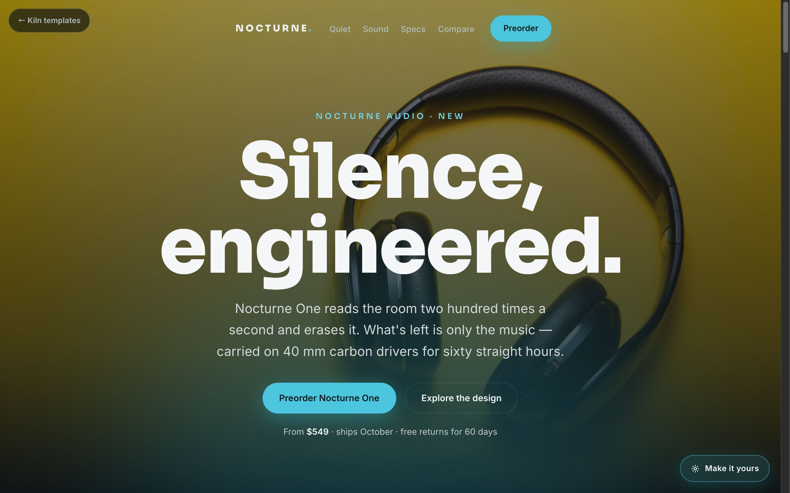
Nocturne
A cinematic dark launch page for hardware — full-bleed photography, oversized type, specs laid out in a bento.
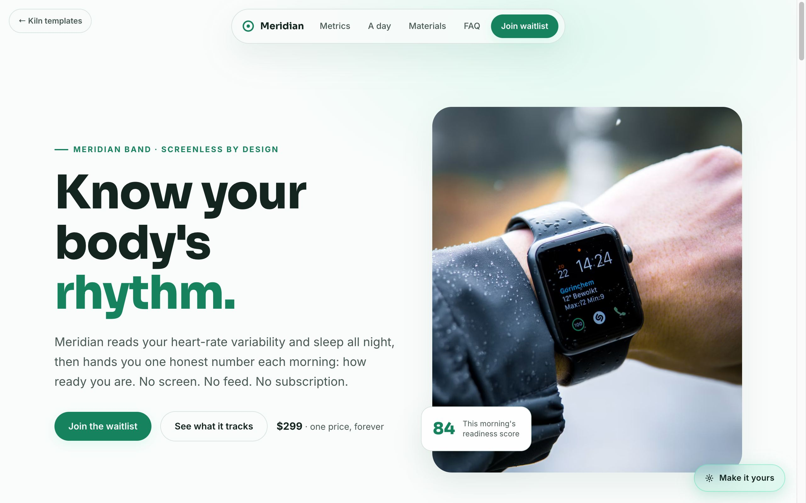
Meridian
A light, airy page for a wellness wearable — soft gradients, editorial rhythm, and room to breathe.
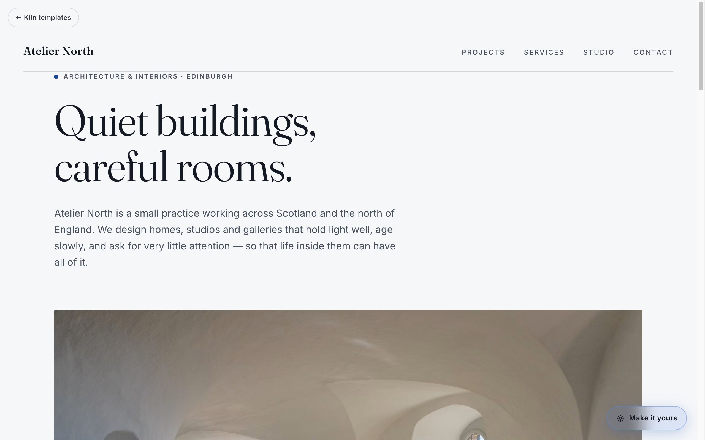
Atelier
A quiet, editorial one-pager for studios and consultancies — the typography does the talking.
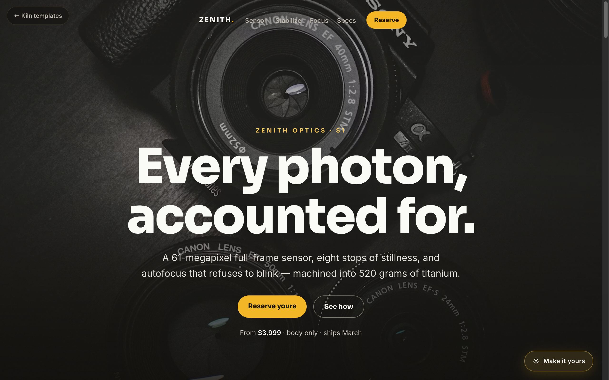
Zenith
The showpiece — images that zoom, pin, and crossfade as you scroll. Keynote energy, zero libraries.
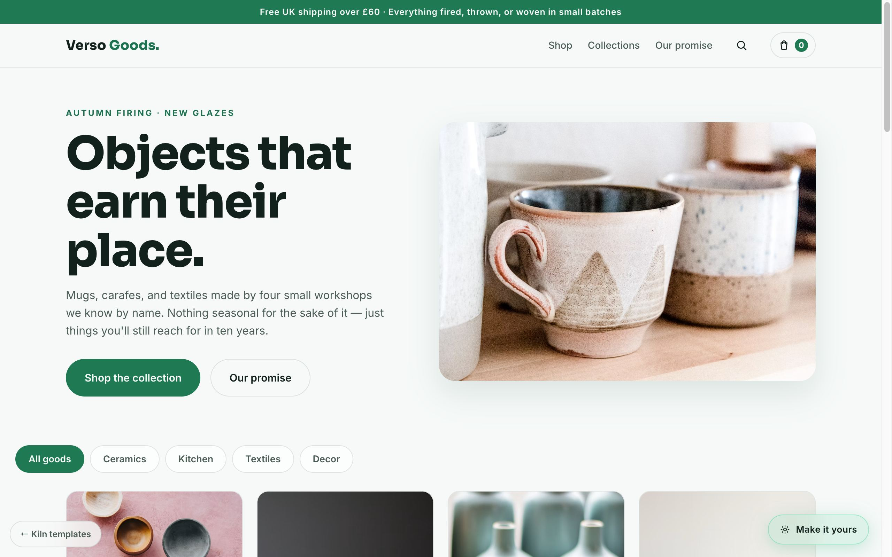
Verso
A homeware shop with a working demo cart — product grid, drawer, and a voice that sells without shouting.
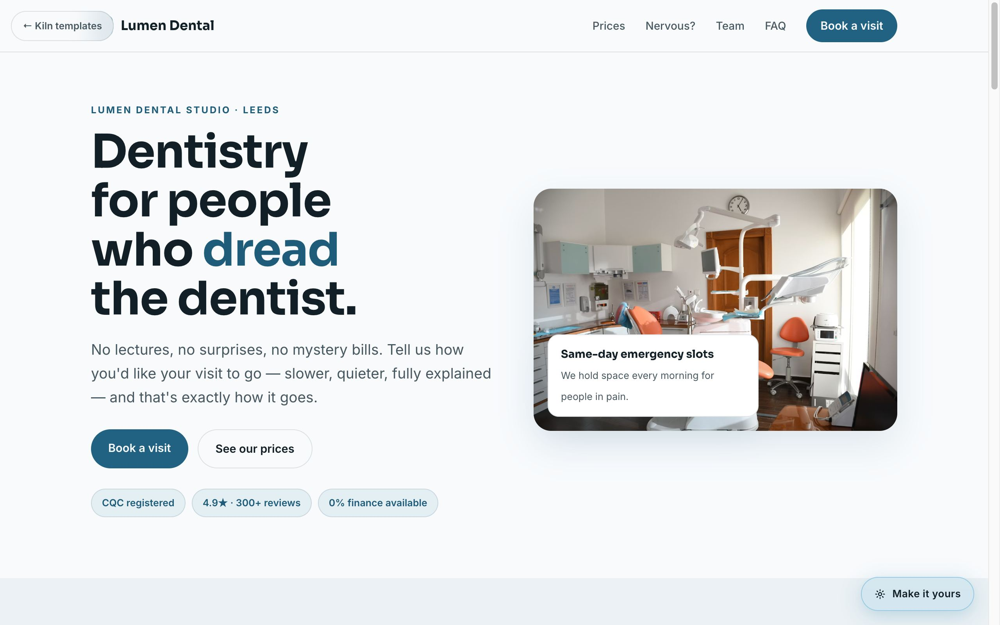
Lumen
A dental clinic that leads with calm and transparent pricing — bookings, team, and honest FAQs built in.
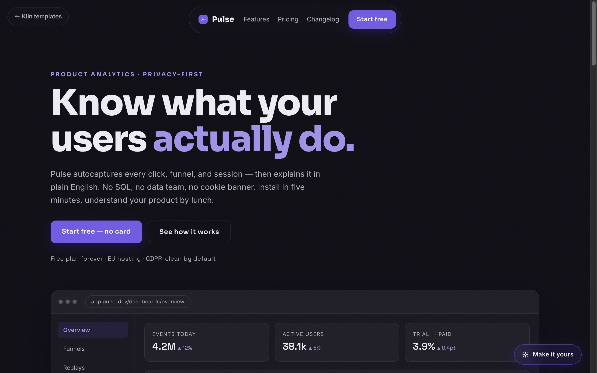
Pulse
A four-page SaaS site — features, pricing, changelog — whose CSS-drawn product mock re-skins with your brand. Your hue follows you across pages.
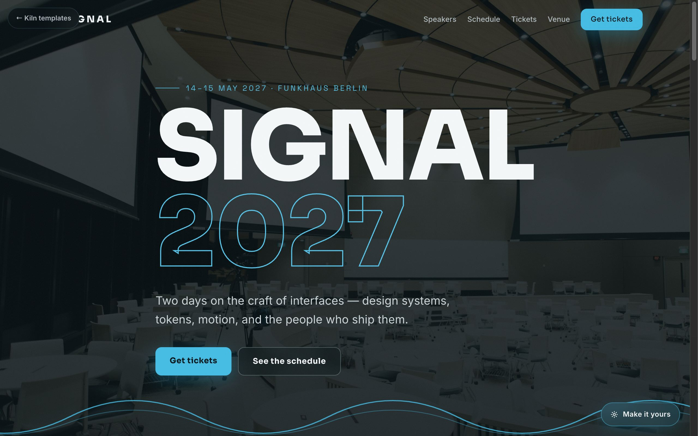
Signal
A two-day conference site with speakers, accessible schedule tabs, and tickets. Electric type and diagonal cuts.
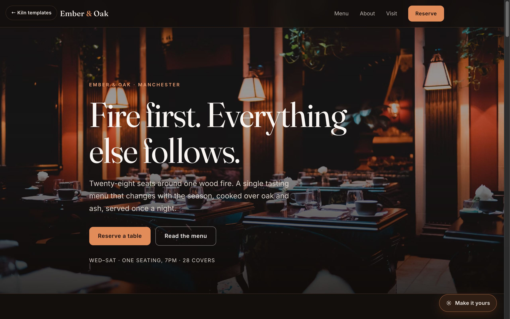
Ember
A wood-fire tasting menu in the dark — reservations, private dining, and photography doing the atmosphere.
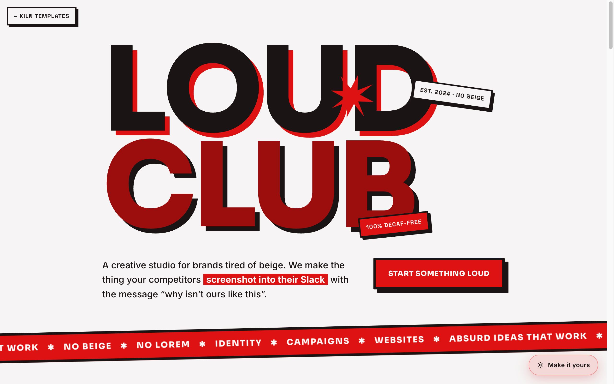
Loud
Neo-brutalist, type-only, cursor-reactive. The template for brands tired of beige.
The pitch is a live demo, not a deck.
Both of these run in the browser right now — click one, change the theme yourself, and watch three products re-skin live.
The Prototype Console
One token config drives a SaaS dashboard, a mobile app, and a playable game — glass finish, ambient light, and copy included. Our whole thesis, running in a browser tab.
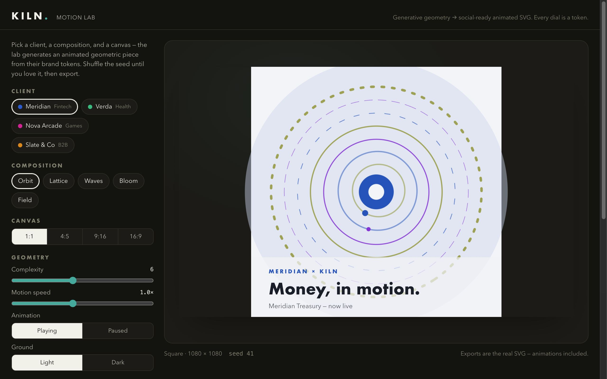
The Motion Lab
Generative geometry that turns brand tokens into animated campaign assets — five composition engines, four social formats, seeded and reproducible, exported as real SVG.
Packages, not hourly mystery.
Fixed scope, fixed price, live preview links from day one. Every engagement starts with your token file — so everything we make for you matches, forever.
Brand Motion Pack
Twelve animated social pieces across square, story, portrait, and banner — generated from your brand tokens, delivered as SVG + PNG with templates for your team.
Launch Site
A five-page marketing site: CMS, analytics, SEO, both color modes, ≥95 Lighthouse. Built on our starter system, themed by your tokens.
Web App MVP
A dashboard-grade product with auth, billing, and real data — the same stack as our Prototype Console, hardened for production.
App + Site Bundle
Cross-platform mobile app and marketing site sharing one design system — one token file, every screen matching.
Care Plan
Updates, monitoring, content changes, and fresh motion assets each month. Your site stays fast, current, and alive.
Game Jam
A branded playable — for a campaign, a launch, or just because your audience deserves fun. Web-first, mobile-friendly, tokens throughout.
Five steps, no surprises.
Discovery
Thirty minutes. What you're building, who it's for, what done looks like.
Token workshop
The signature move. On the call, we build your brand's token file live and you watch it drive a dashboard, a mobile app, and a game — in your colors, your type, your shapes — within the hour.
Prototype
A clickable version of the real thing within days, at a live URL you can share internally.
Build
Weekly preview links, not screenshots. Comment directly on the live site. Two structured revision rounds keep it moving.
Launch & care
Performance and accessibility verified in CI, monitoring switched on, handoff doc delivered. Care Plan keeps it improving after launch day.
We also build our own bets.
The tools we sharpen on client work become things we sell.
Kiln Console
Self-serve theming for teams: edit your tokens, preview across every surface, publish. The prototype console, productized.
Motion templates
The Motion Lab's composition engines as a template marketplace — plug in your brand, export a campaign.
Original games
Small, sharp, web-first games under our own banner. Casual play, configurable everything — naturally.
“Hard-coded is a bug. Configurable is the feature.”
Watch your brand run three products in one call.
The token workshop is free, takes thirty minutes, and ends with your brand live across a dashboard, an app, and a game. Worst case, you leave with a great demo of your own identity.
Book a token workshop or write to uproar.creations.sb@gmail.com